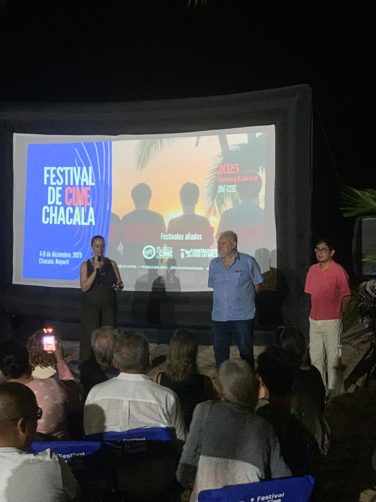

Diciembre

Festival de Cine de Chacala
Un festival gratuito al aire libre donde se proyectan cine nacional e internacional frente al mar, con funciones en la plaza del pueblo y espacios comunitarios.